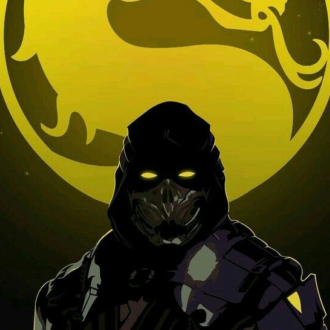
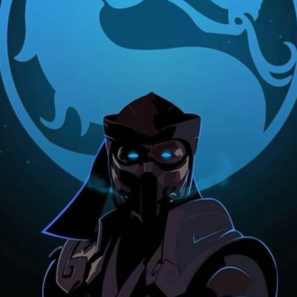
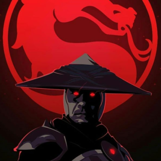
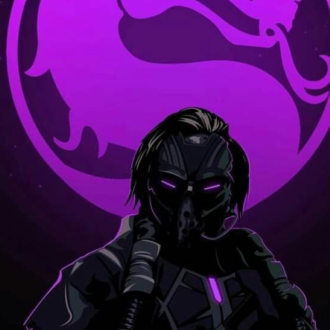
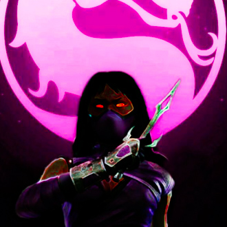

-
Scorpion
Descrição
Scorpion é um ninja espectro e pouco swe sabe sobre ele, Seu nome real é Hanzo Hasashi em sua forma humana
-
SubZero
Descrição
O nome Sub-Zero é um título de conquista , conquistado por dois guerreiros, Bi Han , o primeiro Sub-Zero e Kuai Liang, que se mantem atual. É o atual Grandmaster do clã de assassinos Lin Kuei, que antes era comandado por Sektor.
-
Jade

Descrição
Jade é a amiga de infância edeniana da princesa Kitana e leal a rainha Sindel de Edenia.
-
Raiden
Descrição
Raiden é o deus do Trovão,protetor do plano terreno.Com frequência ele lidera as forças do bem contra o mal e tem um papel essencial na história. Tem muitas habilidades como teletransporte,controlar raios,e usa um bastão Staff como arma.O seu corpo é mortal,porém é imortal.Ele pensa em termos de eternidade,e não como um ser humano e suas memórias vão desde o começo dos tempos.É improvável que ele possa ser morto, mesmo se sua forma humana for destruída,ele tornará a se rematerializar posteriormente em algum lugar.Propício a ser um Elder God assim como Fujin,Shinnok e Argus.
-
Kabal
;Descrição
Kabal foi membro do clã Black Dragon e instaurou novos membros como Kira e Kobra.Como um guerreiro escolhido,sua identidade é um mistério para todos e acredita-se que ele seja um sobrevivente de um ataque do exército de Shao Kahn.Como resultado,ele foi brutalmente marcado,mantido vivo por respiradores artificiais e pelo ódio,apenas para acabar com a conquista de Shao Kahn
-
Mileena
Descrição
Mileena é um clone da princesa Kitana feita por Shang Tsung para Shao Kahn feita para substituir a princesa Edeniana para as próprias intenções do imperador.Além disso,ela é uma mistura de Edeniana com sangue tarkatan de Baraka.